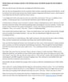

Breast Cancer
 ShareCompartir
ShareCompartir
Breast cancer is a group of diseases that affects breast tissue. Both women and men can get breast cancer, though it is much more common in women. Other than skin cancer, breast cancer is the most common cancer among women in the United States. Some women are at higher risk for breast cancer than others because of their personal or family medical history or because of certain changes in their genes.
Getting mammograms regularly can lower the risk of dying from breast cancer. The United States Preventive Services Task Force recommends that average-risk women who are 50 to 74 years old should have a screening mammogram every two years. Average-risk women who are 40 to 49 years old should talk to their doctor about when to start and how often to get a screening mammogram.
Mammograms are covered by most health insurance programs. You can get a screening mammogram without any out-of-pocket costs. If you are worried about the cost or don’t have health insurance, CDC offers free or low-cost mammograms and education about breast cancer. Find out if you qualify.
Next: Basic Information
CDC’s Latest Research
- Mammography rates after the 2009 revision to the U.S. Preventive Services Task Force breast cancer screening recommendation
- Getting beyond impressions: an evaluation of engagement with breast cancer-related Facebook content
- Racial/ethnicity disparities in invasive breast cancer among younger and older women
Breast Reconstruction After Mastectomy
Many women who have a mastectomy (surgery to remove an entire breast to treat or prevent breast cancer) have the option of having the shape of the removed breast rebuilt. Learn more.
Featured Resources
Our “Breast Cancer: What You Need to Know” fact sheet [PDF-527KB] lists risk factors, symptoms, and screening recommendations.
Diagnosed at age 43, Pam fought breast cancer with everything she had. Read her story in this blog post.
The Know:BRCA tool can help you learn about BRCA genes and assess your risk of having a change in your BRCA1 and BRCA2 genes.
Share our new breast cancer images on your Web site, social network profile, or blog!
“Because of my family history, I’m at high risk.” Breast cancer survivor Pam shares her story in this podcast.

This article about breast cancer [PDF-87KB] is free to use in any publication.
- Page last reviewed: January 5, 2017
- Page last updated: January 5, 2017
- Content source: